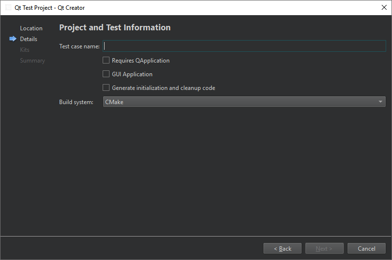

Create Qt tests
Qt Creator integrates the Qt Test framework for unit testing Qt applications and libraries.
To create a Qt test:
- Go to File > New Project > Test Project.
- Select Qt Test Project > Choose.
- In the Project and Test Information dialog, specify settings for the project and test.

- In Test case name, enter a name for the test case.
- Select Requires QApplication to add the include statement for QApplication to the main.cpp file of the project.
- Select GUI Application to create a Qt application.
- Select Generate initialization and cleanup code to add functions to your test that the testing framework executes to initialize and clean up the test.
- In Build system, select the build system to use for building the project: CMake, qmake, or Qbs.
Qt Creator creates the test in the specified project directory. Edit the .cpp file to add private slots for each test function in your test.
For more information about creating Qt tests, see Creating a Test.
See also How To: Test, Select the build system, Testing, and Test Results.